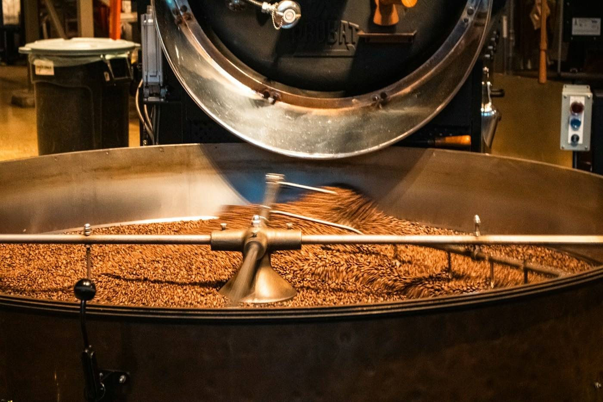

Rue Saint-François, la Brûlerie de l'Odet torréfie ses cafés et réunit thés, arts de la table, ustensiles de cuisine et idées cadeaux.

Torréfiés par la maison, en grains ou moulus à la demande.
Un choix de thés et d'infusions au poids.
Tasses, théières et vaisselle pour le service.
Le côté Cook : des outils pour cuisiner au quotidien.
De quoi composer un cadeau pour un amateur de café, de thé ou de cuisine.
Pour connaître les horaires d'ouverture ou réserver un café en particulier, appelez la boutique au 02 98 95 28 68.